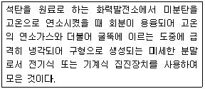
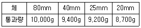

콘크리트기능사 (2014-01-26 기출문제)
1과목: 콘크리트재료
1. 굵은 골재의 최대치수가 40mm 이하인 콘크리트의 압축강도 시험용 원주형 공시체의 직경과 높이로 가장 적합한 것은?
- ø15×10cm
- ø10×10cm
- ø15×20cm
- ø15×30cm
(정답률: 74%)

2. 콘크리트 시공에서 시멘트 사용량을 절약하려면 골재로서 다음 중 어느 것에 가장 유의해야 하는가?
- 시멘트 풀과 부착성
- 골재 입도
- 골재 중량
- 골재 밀도
(정답률: 66%)
3. 모래의 유기불순물 시험에서 필요 없는 것은?
- 수산화나트륨
- 탄닌산
- 표준색 용액
- 황산나트륨
(정답률: 68%)
4. 프리플레이스트 콘크리트의 특징이 아닌 것은?
- 블리딩 및 레이턴스가 없다
- 수중 콘크리트에 적합하다.
- 장기강도는 보통 콘크리트보다 크다.
- 조기강도는 보통 콘크리트보다 크다.
(정답률: 48%)
5. 잔골재 A의 조립률은 3.26이고 잔골재 B의 조립률은 2.44이다. 이 골재의 조립률이 적당하지 않아 조립률이 2.8이 되는 잔골재 C를 만들고자 할 때 잔골재 A와 B의 혼합비는? (순서대로 A : B)
- 0.75 : 0.65
- 0.36 : 0.46
- 0.46 : 0.36
- 0.25 : 0.95
(정답률: 54%)
6. 벽이나 기둥과 같이 높이가 높은 콘크리트를 연속해서 타설할 경우 콘크리트의 쳐 올라가는 속도는 일반적으로 30분에 얼마 정도로 하는가?
- 1m이하
- 1~1.5m
- 2~3m
- 3~4m
(정답률: 91%)
7. 다음 중 콘크리트의 배합설계 방법에 속하지 않는 것은?
- 겉보기 배합에 의한 방법
- 계산 배합에 의한 방법
- 시험 배합에 의한 방법
- 배합표에 의한 방법
(정답률: 74%)
8. 다음중 알루미나 시멘트의 용도로서 옳은 것은?
- 댐 축조 또는 큰 구조물의 콘크리트공사
- 구조물의 중량을 줄이기 위한 콘크리트공사
- 해수공사나 한중공사
- 수중 콘크리트나 서중공사
(정답률: 68%)
9. 공기연행제(AE제)를 사용할 때의 특성을 설명한 것으로 옳지 않는 것은?
- 철근과의 부착 강도가 커진다.
- 동결 융해에 대한 저항이 커진다.
- 워커빌리티가 좋아지고 단위 수량이 줄어든다.
- 수밀성은 커지나 강도가 작아진다.
(정답률: 62%)
10. 서중 콘크리트의 시공이나 레디믹스트 콘크리트에서 운반거리가 먼 경우, 또는 연속 콘크리트를 칠 때 작업이음이 생기지 않도록 할 경우에 사용하면 효과가 있는 혼화제는?
- 분산제
- 지연제
- 증진제
- 응결경화 촉진제
(정답률: 87%)
11. 다음 중 콘크리트의 운반 기구 및 기계가 아닌 것은?
- 버킷
- 콘크리트펌프
- 콘크리트 플랜트
- 벨트 컨베이어
(정답률: 76%)
12. 내부 진동기를 사용하여 콘크리트를 다지기할 때 주의해야 할 사항으로 잘못된 것은?
- 진동다지기를 할 때에는 내부 진동기를 하츨의 콘크리트 속으로 0.1m 정도 찔러 넣는다.
- 내부 진동기는 콘크리트로부터 천천히 빼내어 구멍이 남지 않도록 한다.
- 내부 진동기의 삽입간격은 1.5m 이하로 하여야 한다.
- 내부 진동기는 연직으로 찔러 넣어야 한다.
(정답률: 66%)
13. 외기 온도가 25℃ 미만일 때 콘크리트는 비비기로부터 타설이 끝날 때까지의 시간은 원칙적으로 몇 시간이 이내로 하는가?
- 1시간
- 2시간
- 3시간
- 4시간
(정답률: 85%)
14. 서중 콘크리트를 타설할 때의 콘크리트 온도는 최대 몇 ℃ 이하이어야 하는가?
- 20℃
- 25℃
- 30℃
- 35℃
(정답률: 67%)
15. 콘크리트는 타설한 후 습윤상태로 노출면이 마르지 않도록 하여야 한다. 조강 포틀랜드 시멘트를 사용한 콘크리트의 경우 습윤양생 기간의 표준으로 옳은 것은?(단, 일 평균기온이 15℃ 이상인 경우)
- 3일
- 5일
- 7일
- 9일
(정답률: 60%)
16. 지름 150mm, 높이 300mm인 공시체를 사용하여 콘크리트 쪼갬인장강도 시험을 하여 시험기에 나타난 최대하중이 147.9kN이었다. 인장강도는 얼마인가?
- 1.5MPa
- 1.7MPa
- 1.9MPa
- 2.1MPa
(정답률: 56%)
17. 콘크리트 압축강도 시험에 사용하는 시료의 양생 온도 범위로 가장 적합한 것은?
- 0~4℃
- 6~10℃
- 11~15℃
- 18~22℃
(정답률: 67%)
18. 풍화된 시멘트에 대한 설명으로 잘못된 것은?
- 입상 • 괴상으로 굳어지고 이상응결을 일으키는 원인이 된다.
- 시멘트의 비중이 떨어진다.
- 시멘트의 응결이 지연된다.
- 시멘트의 감열감량이 저하된다.
(정답률: 57%)
19. 프리플레이스트 콘크리트용 그라우트, 프리스트레스트(PS) 콘크리트 등에 사용되며 골재나 PS 강재의 빈틈을 잘 채워지게 하여 부착을 좋게 하는 혼화제는?
- 급결제
- 지연제
- 발포제
- 공기연행제
(정답률: 52%)
20. 굵은 골재의 최대치수에 대한 설명 중 틀린 것은?
- 무근 콘크리트의 굵은골재 최대치수는 40mm이고, 이때 부재 최소치수의 1/4을 초과해서는 안 된다.
- 철근 콘크리트의 굵은골재 최대치수는 거푸집 양 측면 사이의 최소 거리의 1/5를 초과하지 않아야 한다.
- 일반적인 철근콘크리트 구조물인 경우 굵은골재 최대치수는 15mm를 표준으로 한다.
- 단면이 큰 철근콘크리트 구조물인 경우 굵은골재 최대치수는 40mm를 표준으로 한다.
(정답률: 71%)
2과목: 콘크리트시공
21. 150mm×150mm×530mm 크기의 콘크리트 시험체를 450mm 지간이 되도록 고정한 후 3등분점 하중법으로 휨강도를 측정하였다. 35kN의 최대하중에서 중앙부분이 파괴되었다면 휨강도는 얼마인가?
- 4.7MPa
- 5.3MPa
- 5.6MPa
- 5.9MPa
(정답률: 63%)
22. 단위 골재량의 절대부피의 0.75m3인 콘크리트에서 절대 잔골재율이 38%이고 잔골재 밀도 2.6g/cm3, 굵은골재의 밀도가 2.65g/cm3라면 단위 굵은골재량은 몇 kg/m3인가?
- 741
- 865
- 1021
- 1232
(정답률: 50%)
23. 다음 시멘트 중 특수 시멘트에 속하는 것은?
- 백색 포틀랜드 시멘트
- 팽창 시멘트
- 실리카 시멘트
- 플라이 애시 시멘트
(정답률: 72%)
24. 공극률이 25%인 골재의 실적률은?
- 12.5%
- 25%
- 50%
- 75%
(정답률: 85%)
25. 한중 콘크리트에 관한 설명으로 틀린 것은?
- 하루의 평균기온이 4℃ 이하가 예상되는 조건일 때는 한중 콘크리트로 시공하여야 한다.
- 한중 콘크리트는 공기연행 콘크리트를 사용하는 것을 원칙으로 한다.
- 콘크리트를 타설할 때에는 철근이나 거푸집 등에 빙설이 부착되어 있지 않아야 한다.
- 초기 동해를 적게 하기 위하여 단위수량은 크게 하는 것이 좋다.
(정답률: 66%)
26. 일반 콘크리트의 수밀성을 기준으로 물-결합재 비를 정할 경우 그 값이 기준으로 옳은 것은?
- 40% 이하
- 50% 이하
- 65% 이하
- 75% 이하
(정답률: 86%)
27. 한중 콘크리트에 있어서 양생 중 콘크리트의 온도는 최저 몇 ℃이상으로 유지 하는 것을 표준으로 하는가?
- 5℃
- 10℃
- 15℃
- 20℃
(정답률: 84%)
28. 분말도가 큰 시멘트에 대한 설명으로 틀린 것은?
- 수밀한 콘크리트를 얻을 수 있으며 균열의 발생이 없다.
- 풍화되기 쉽고 수화열이 많이 발생한다.
- 수화반응이 빨라지고 조기강도가 크다.
- 블리딩량이 적고 워커블한 콘크리트를 얻을 수 있다.
(정답률: 73%)
29. 잔골재의 단위 무게가 1.65t/m3이고 밀도가 2.65g/cm3일 때 이 골재으 ㅣ공극률은 얼마인가?
- 32.7%
- 34.7%
- 37.7%
- 39.1%
(정답률: 59%)
30. 콘크리트의 건조를 방지하기 위하여 방수제를 표면에 바르든지 또는 이것을 뿜어 붙이기를 하여 습윤양생을 하는 것은?
- 전기양생
- 방수양생
- 증기양생
- 피막양생
(정답률: 68%)
31. 콘크리트 슬럼프 시험에 대한 설명으로 틀린 것은?
- 슬럼프 값은 5mm의 정밀도로 측정한다.
- 슬럼프 콘에 시료를 채우고 벗길 때까지의 전 작업시간은 3분 이내로 한다.
- 슬럼프 콘을 벗기는 작업은 20초 정도로 한다.
- 굵은골재의 최대치수가 40mm를 넘는 콘크리트의 경우에는 40mm를 넘는 굵은골재를 제거한다.
(정답률: 78%)
32. 휨강도 시험을 위한 공시체의 길이에 대한 설명으로 옳은 것은?
- 단면의 한 변의 길이의 2배보다 50mm 이상 긴 것으로 한다.
- 단면의 한 변의 길이인 2배보다 80mm 이상 긴 것으로 한다.
- 단면의 한 변의 길이의 3배보다 50mm 이상 긴 것으로 한다.
- 단면의 한 변의 길이의 3배보다 80mm 이상 긴 것으로 한다.
(정답률: 79%)
33. 콘크리트용 모래에 포함되어 있는 유기불순물 시험에 사용되는 시약은
- 무수황산나트륨
- 염화칼슘 용액
- 실리카 겔
- 수산화나트륨 용액
(정답률: 79%)
34. 프리플레이스트 콘크리트에서 굵은골재의 최소 치수는 몇 mm 이상이어야 하는가?(오류 신고가 접수된 문제입니다. 반드시 정답과 해설을 확인하시기 바랍니다.)
- 15mm
- 25mm
- 40mm
- 60mm
(정답률: 49%)
35. 콘크리트의 블리딩 시험에 있어서 표면에 올라온 물의 수집을 처음 60분간은 10분간격으로 하고 그후 블리딩이 정지할 때까지는 몇 분간격으로 하는가?
- 15분
- 20분
- 30분
- 60분
(정답률: 79%)
36. 아래의 표에서 설명하는 혼화재료는?

- 포졸란
- 플라이 애시
- 실리카 퓸
- 공기연행제(AE제)
(정답률: 79%)
37. 슬럼프 콘의 규격으로 옳은 것은?
- 윗면의 안지름이 150mm,
밑면의 안지름이 300mm,
높이 300mm - 윗면의 안지름이 150mm,
밑면의 안지름이 200mm,
높이 300mm - 윗면의 안지름이 100mm,
밑면의 안지름이 300mm,
높이 300mm - 윗면의 안지름이 100mm,
밑면의 안지름이 200mm,
높이 300mm
(정답률: 85%)
38. 콘크리트를 제조할 때 각 재료의 계량에 대한 허용오차 중 골재의 허용오차로 옳은 것은?
- ±1%
- ±2%
- ±3%
- ±4%
(정답률: 80%)
39. 콘크리트 타설에 대한 설명으로 틀린 것은?
- 한 구획 내의 콘크리트는 타설이 완료될 때까지 연속해서 타설해야 한다.
- 콘크리트는 그 표면이 한 구획 내에서는 거의 수평이 되도록 타설하는 것을 원칙으로 한다.
- 콘크리트 타설의 1층 높이는 다짐능력을 고려하여 이를 결정하여야 한다.
- 타설한 콘크리트는 그 수평을 맞추기 위하여 거푸집 안에서 횡방향으로 이동시키면서 작업하여야 한다.
(정답률: 86%)
40. 콘크리트의 슬럼프 시험을 통하여 알 수 있는 것은?
- 반죽질기
- 내진성
- 압축강도
- 탄성계수
(정답률: 80%)
3과목: 콘크리트 재료시험
41. 콘크리트용 굵은골재의 안정성은 황산나트륨으로 5회 시험을 하여 평가한다. 이때 손실질량은 몇 % 이하를 표준으로 하는가?
- 12%
- 10%
- 5%
- 3%
(정답률: 50%)
42. 시멘트 입자를 분산시킴으로써 콘크리트의 소요의 워커빌리티를 얻는 데 필요한 단위수량을 줄이기 위해 사용되는 혼화제는?
- 감수제
- AE제(공기연행제)
- 촉진제
- 급결제
(정답률: 66%)
43. 시멘트 비중시험 결과 시멘트의 질량은 64g, 처음 광유 눈금을 읽은 값은 0.4mL, 시료를 넣은 후 광유 눈금을 읽은 값은 20.9mL였다. 이 시멘트의 비중은 얼마인가?
- 3.09
- 3.12
- 3.15
- 3.18
(정답률: 61%)
44. 표면건조 포화상태인 굵은골재의 질량이 4,000g이고, 이 시료의 절대건조상태일 때의 질량이 3,940g이었다면, 흡수율은?
- 1.25%
- 1.32%
- 1.45%
- 1.52%
(정답률: 48%)
45. 콘크리트 1m3를 배합할 때 재료의 양을 무엇이라고 하는가?
- 시방배합
- 배합 강도
- 단위량
- 현장배합
(정답률: 65%)
46. 콘크리트 타설 후 콘크리트 표면에 떠올라와 침전한 미세한 물질은?
- 블리딩
- 레이턴스
- 성형성
- 슬럼프
(정답률: 72%)
47. 콘크리트 운반 계획에 대한 사항이 아닌 것은?
- 운반로를 선정한다.
- 운반 방법은 한 방법으로 실시하게 한다.
- 1일 타설량을 고려하여 설비 및 인원을 배치한다.
- 재료 분리가 최소가 되는 방법을 고려한다.
(정답률: 75%)
48. 다음 콘크리트 믹서 중에서 중력식 믹서는?
- 1축 믹서
- 가경식 믹서
- 2축 믹서
- 팬형 믹서
(정답률: 81%)
49. 골재의 체가름 시험에 사용되는 시료에 대한 설명 중 틀린 것은?
- 굵은골재 최대 치수가 25mm일 때 시료의 최소 질량은 5kg으로 한다.
- 시험할 대표 시료를 4분법이나 시료 분취기를 이용하여 채취한다.
- 채취한 시료는 표면건조포화상태에서 시험을 한다.
- 잔골재는 1.2mm체에 5%(질량비) 이상 남는 시료의 최소 질량은 500g으로 한다.
(정답률: 34%)
50. 굳지 않는 콘크리트 블리딩 시험으로 알 수 있는 것은?
- 워커빌리티
- 재료 분리
- 응결 시간
- 단위 수량
(정답률: 52%)
51. 잔골재 밀도시험에서 원뿔형 몰드에 시료를 넣고 다짐대로 몇 회 다져 잔골재의 흘러내리는 상태를 관찰하는가?
- 15회
- 20회
- 25회
- 50회
(정답률: 83%)
52. 혼화재료 중 혼화재에 속하지 않은 것은?
- 촉진제
- 팽창재
- 플라이애시
- 고로 슬래그 미분말
(정답률: 59%)
53. 콘크리트 양생시 유해한 영행을 주는 요인이 아닌 것은?
- 습도
- 직사광선
- 바람
- 진동
(정답률: 44%)
54. 일반적으로 된반죽의 콘크리트를 다질 때 가장 많이 사용하는 진동기는
- 거푸집 진동기
- 내부 진동기
- 공기식 진동기
- 평면식 진동기
(정답률: 61%)
55. 골재의 표면수량에 대한 설명 중 옳지 않은 것은?
- 골재의 습윤상태에서 표면건조 포화상태의 수분을 뺀 물의 양이다.
- 시방배합을 현장배합으로 보정할 경우 표면수량을 고려한다.
- 절대건조상태에서 표면건조포화상태로 되기까지 흡수된 물의 양이다.
- 골재의 표면에 묻어 있는 물의 양이다.
(정답률: 55%)
56. 콘크리트에 사용되는 혼화재료 중 워커빌리티 개선에 효과가 없는 것은?
- AE제
- 유동화제
- 응결경화촉진제
- 플라이애시
(정답률: 62%)
57. 골재의 저장에 대한 설명으로 틀린 것은?
- 직사광선을 피하기 위한 시설이 필요하다.
- 빙설의 혼입이나 동결을 막기 위한 시설이 필요하다.
- 입도에 맞게 여러 종류의 골재를 한 장소에 저장한다.
- 표면수가 일정하도록 저장한다.
(정답률: 83%)
58. 콘크리트에 사용되는 굵은골재의 설명으로 틀린 것은?
- 골재의 입자가 크고 작은 것이 골고루 섞여 잇는 것이 좋다.
- 골재의 모양은 둥근 것이 좋다.
- 굵은 골재는 5mm체에 거의 남는 골재이다.
- 유기물의 일정량 함유되어야 한다.
(정답률: 64%)
59. 콘크리트 인장강도 시험에 대한 설명 중 틀린 것은?
- 시험체를 매초 0.06±0.04MPa의 일정한 비율로 증가하도록 하중을 가한다.
- 시험체의 지름은 150mm 이상으로 한다.
- 시험체의 지름은 굵은골재 최대치수의 3배 이상이어야 한다.
- 시험체는 습윤상태에서 시험을 한다.
(정답률: 46%)
60. 굵은 골재 전체 질량 10,000g을 가지고 체가름 시험한 결과 다음 표와 같다. 이 골재의 최대치수는?

- 80mm
- 40mm
- 25mm
- 20mm
(정답률: 38%)